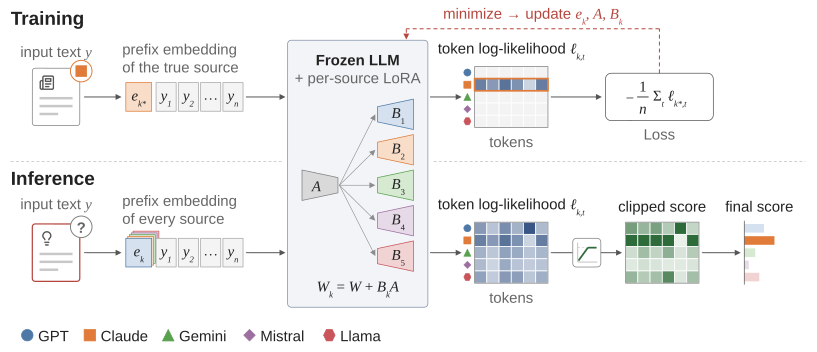
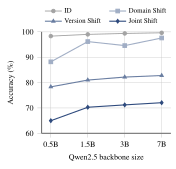
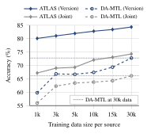
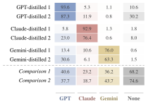
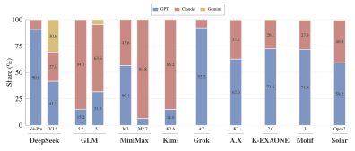

Rather than directly predicting the source, ATLAS learns a source-conditioned language model for each model family on a frozen LLM and attributes a text by comparing its token-level likelihoods under every source condition.
Abstract
As large language models (LLMs) are increasingly used to generate text, their misuse has become a growing societal problem, with serious implications for academic misconduct, model distillation, and cyberattacks. For these reasons, Model Authorship Attribution (MAA), which identifies the source model of a given text, is important for promoting the responsible use of LLMs and improving AI safety. In practice, attribution systems must remain reliable beyond the distributions observed during training. They may encounter texts from unseen domains and writing settings, as well as generations from future versions of model families that were not available when the system was trained. However, existing MAA methods often exhibit substantial performance degradation under such distribution shifts. To address this challenge, we propose Authorship Tracing via Likelihood-based Attribution of Sources (ATLAS), which formulates MAA through source-conditioned text modeling rather than direct source prediction. ATLAS learns how text from each source family is generated and attributes a given text by comparing its likelihood under each learned source condition. We aggregate this likelihood evidence at the token level with clipping so that no single token dominates the decision. We further introduce MAABench, a novel and broad MAA benchmark that can evaluate more practical OOD settings such as domain and version. Our experiments show that ATLAS consistently outperforms existing baselines across MAABench and OpenTuringBench. In particular, when both the generation domain and the model version change on MAABench, ATLAS achieves 74.27% accuracy, 9.00pp higher than the strongest baseline. Beyond MAA, ATLAS can also help identify distillation source models by measuring which source model a target LLM most closely resembles. Our extended experiments support this claim by showing that ATLAS recovers the known teacher of every distilled model we evaluate.
Method: ATLAS
- Source-conditioned likelihood, not a classifier. For each model family, ATLAS learns a source condition on a frozen pretrained LLM (a prefix embedding ek and a source-specific LoRA up-projection Bk, with a shared down-projection A), trained only to maximize the likelihood of that family's texts.
- Token-level clipped attribution. At inference, ATLAS scores a text under every source condition, compares the sources token by token, and clips each token's relative evidence so that a few extreme tokens cannot decide the attribution.
MAABench
A benchmark for attribution under distribution shift in both the generation domain and the source-model version.
GPT · Claude · Gemini · Mistral · Llama
1 for training, 3 held out
4 for training, 2 held out
All five families receive the same prompts, built from the metadata of human-written seed texts in News, Wikipedia, Academic Writing, Product Review, Patent, and Stack Exchange.
Besides the in-distribution (ID) test, MAABench evaluates three OOD settings: Domain shift (held-out domains with a different system prompt), Version shift (three newer versions of each family), and Joint shift (both at once).
| Distribution | Split | Setting | MGT | Human |
|---|---|---|---|---|
| ID | Train | – | 149,760 | 29,952 |
| Val | – | 9,990 | 1,998 | |
| Test | – | 9,985 | 1,997 | |
| OOD | Test | Domain | 7,470 | 1,494 |
| Version | 29,700 | 1,980† | ||
| Joint | 21,615 | 1,441† | ||
| Total | 228,520 | 35,443 | ||
Summary of MAABench. †Reused human texts; the total counts each text once.
Results
Attribution on MAABench
| Method | ID | Domain | Version | Joint | ||||
|---|---|---|---|---|---|---|---|---|
| Acc | F1 | Acc | F1 | Acc | F1 | Acc | F1 | |
| Fixed-feature baselines | ||||||||
| Fast-DetectGPT | 44.37 | 43.54 | 45.29 | 44.18 | 35.22 | 34.75 | 31.85 | 30.81 |
| Binoculars | 45.61 | 44.81 | 46.53 | 45.70 | 36.09 | 35.30 | 32.56 | 31.17 |
| GPT-who | 58.63 | 58.29 | 55.29 | 56.17 | 41.71 | 40.34 | 39.94 | 38.43 |
| Sniffer | 76.00 | 75.83 | 64.51 | 64.89 | 51.97 | 50.72 | 47.57 | 45.85 |
| StatEnsemble | 74.36 | 74.11 | 58.07 | 58.52 | 38.86 | 38.77 | 32.29 | 32.35 |
| Encoder-tuning baselines | ||||||||
| DeTeCtive | 99.51 | 99.51 | 94.69 | 94.72 | 70.60 | 70.21 | 63.32 | 62.63 |
| OTBDetector | 99.50 | 99.50 | 94.89 | 94.89 | 70.20 | 69.73 | 63.48 | 62.54 |
| DA-MTL | 99.58 | 99.58 | 95.31 | 95.31 | 71.08 | 70.78 | 64.99 | 64.02 |
| Idiosyncrasies | 99.56 | 99.56 | 95.04 | 95.05 | 71.98 | 71.61 | 65.27 | 64.11 |
| ATLAS (ours) | 99.72 | 99.72 | 97.97 | 97.97 | 84.30 | 84.27 | 74.27 | 73.99 |
MAA performance on MAABench (accuracy and macro-F1, %). ID is nearly saturated, but under OOD evaluation ATLAS outperforms the strongest baseline by 2.66pp, 12.32pp, and 9.00pp on Domain, Version, and Joint shift. ATLAS and the four encoder-tuning baselines are averaged over three seeds.
Attribution on OpenTuringBench
| Method | ID | OOD | ||||
|---|---|---|---|---|---|---|
| ID | E1 | E2 | E3 | E4 | ||
| Fixed-feature baselines | ||||||
| Fast-DetectGPT | 18.93 | 19.49 | 17.57 | 21.68 | 15.37 | 19.92 |
| Binoculars | 19.54 | 22.91 | 20.33 | 24.79 | 16.41 | 23.15 |
| GPT-who | 47.55 | 22.41 | 44.68 | 31.09 | 15.05 | 25.89 |
| Sniffer | 61.65 | 27.25 | 55.78 | 38.67 | 15.53 | 30.12 |
| StatEnsemble | 61.93 | 60.52 | 58.40 | 63.30 | 26.99 | 48.46 |
| Encoder-tuning baselines | ||||||
| DeTeCtive | 99.83 | 84.43 | 99.36 | 89.00 | 27.48 | 56.61 |
| OTBDetector | 99.76 | 84.41 | 99.11 | 88.03 | 30.89 | 47.92 |
| DA-MTL | 99.87 | 83.79 | 99.48 | 95.99 | 32.36 | 62.19 |
| Idiosyncrasies | 89.90 | 70.16 | 86.56 | 79.52 | 28.64 | 41.11 |
| ATLAS (ours) | 99.80 | 89.71 | 99.70 | 98.79 | 41.92 | 95.71 |
MAA performance on OpenTuringBench (accuracy, %). ATLAS reaches 95.71% on OOD, 33.52pp above the best baseline, and is best on all four in-domain variations (E1–E4).
Backbone size and data efficiency


(a) Larger backbones help most under OOD evaluation. (b) With only 1,000 texts per family, ATLAS already outperforms DA-MTL trained on the full split on Version and Joint shift.
Beyond Attribution: Distilled and Deployed Models
Distilled models with known teachers
A student trained on the outputs of a teacher may retain the teacher's generation patterns. We train ATLAS as a three-class attributor over GPT, Claude, and Gemini and apply it to six publicly released distilled models whose teachers are stated in their model cards, two students per teacher built on different base models.

Model resemblance of deployed models
We also apply the same attributor to recently deployed models for which no teacher, or even the use of distillation, is publicly established. For each model, we report the share of its texts attributed to each family. We evaluate twelve deployed models from DeepSeek, GLM, MiniMax, Kimi, Grok, A.X, K-EXAONE, Motif, and Solar.

Resemblance of deployed models. Share of each model's texts attributed to each candidate family (%); segments under 12% are left unlabeled.
| Model | GPT | Claude | Gemini | Reject |
|---|---|---|---|---|
| DeepSeek-V4-Pro | 90.6 | 9.3 | 0.1 | 0.1 |
| DeepSeek-V3.2 | 41.5 | 27.8 | 30.6 | 0.4 |
| GLM-5.2 | 15.2 | 84.7 | 0.1 | 0.0 |
| GLM-5.1 | 31.5 | 63.6 | 4.9 | 0.2 |
| MiniMax-M3 | 56.4 | 43.6 | 0.1 | 0.2 |
| MiniMax-M2.7-Turbo | 6.2 | 93.8 | 0.0 | 0.1 |
| Kimi-K2.6 | 14.8 | 85.2 | 0.0 | 0.1 |
| Grok-4.7 | 92.2 | 7.8 | 0.1 | 0.2 |
| A.X-K2 | 62.6 | 37.2 | 0.2 | 0.2 |
| K-EXAONE-2.0 | 72.6 | 26.1 | 1.4 | 1.5 |
| Motif-3 | 71.8 | 27.3 | 0.9 | 0.8 |
| Solar-Open2 | 59.2 | 40.0 | 0.8 | 1.0 |
Share of texts (%) attributed to each family; the most attributed family is highlighted. Reject is the share of texts that no source condition explains better than the frozen backbone.
BibTeX
@article{ko2026atlas,
title = {Who's Behind the Text? Robust Model Authorship Attribution},
author = {Ko, Minseok and Lee, Hyunseok and Song, Woomin and Kim, Beomjun and Shin, Jinwoo and Kim, Kunwoong},
journal = {arXiv preprint arXiv:XXXX.XXXXX},
year = {2026}
}